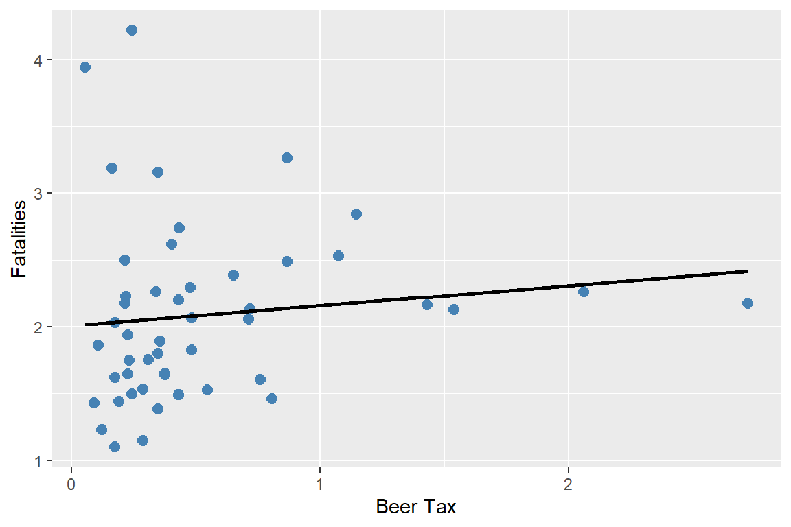
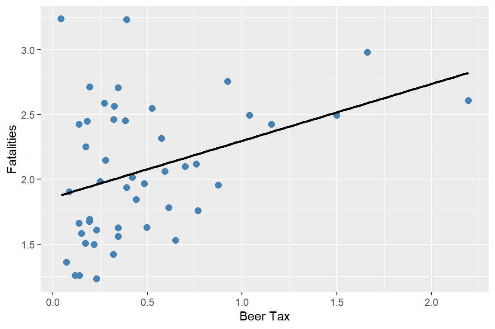

# Load necessary libraries
library(plm)
library(stargazer)
library(sandwich)
library(modelsummary)
options("modelsummary_factory_default" = "gt")
library(car)
library(tidyverse)
library(fixest)19 Regression with Panel Data
19.1 Panel data
We assume that we have a dataset that contains observations on a set of entities over multiple time periods. The entities can be individuals, firms, industries, or countries, and the time periods can be days, months, quarters, or years.
Definition 19.1 (Panel data) Panel data (longitudinal data) contain observations on a set of entities over multiple time periods.
If we observe all entities in every time period, we call the panel a balanced panel, i.e., we have observations on all entities over the entire sample period. On the other hand, if we have missing observations on some entities at certain time periods, we call the panel an unbalanced panel or an incomplete panel.
Panel data with many entities but only a few time periods are referred to as short panels. Conversely, panel data with many time periods but only a few entities are called long panels. When panel data include both a large number of entities and a large number of time periods, they are referred to as large panels.
In this chapter, we study commonly used panel data models. These models have features that differ from the cross-sectional and time series models. The key features of panel data models are as follows:
- Panel data models can exploit the variation across entities and over time, which can lead to more efficient estimators.
- Panel data models allow controlling for unobserved factors that vary across entities but do not vary over time.
- Panel data models allow controlling for unobserved factors that vary across time but do not vary over entities.
- Panel data models can be used to study the dynamics of economic relationships over time.
We assume that there are \(n\) entities and \(T\) time periods. Let \(i\) and \(t\) to denote entities and time periods, respectively. Suppose we have an outcome variable and \(k\) explanatory variables in the dataset. Then, our dataset consists of the realizations of \[ \begin{align} (X_{1it},\,X_{2it},\dots,X_{kit},\,Y_{it}),\quad i=1,2,\dots,n,\quad t=1,2,\dots,T. \end{align} \]
19.1.1 Example: Traffic deaths and alcohol taxes
In this chapter, we analyze the traffic fatality dataset (fatality.csv) provided by Stock and Watson (2020). This dataset covers annual observations for the lower 48 states (excluding Alaska and Hawaii) over the period 1982 to 1988. Consequently, the panel consists of \(n = 48\) entities and \(T = 7\) time periods, yielding a total of \(n \times T = 336\) observations. In Table 19.1, we describe some of the variables in the dataset.
| Variable | Description |
|---|---|
state |
State ID (FIPS) code |
year |
Year |
mrall |
Per capita vehicle fatality (number of traffic deaths) |
beertax |
Real tax on a case of beer |
mlda |
Minimum legal drinking age |
jaild |
Dummy variable equal to 1 if the state requires a mandatory jail sentence for an initial drunk driving conviction, 0 otherwise |
comserd |
Dummy variable equal to 1 if the state requires mandatory community service for an initial drunk driving conviction, 0 otherwise |
vmiles |
Total vehicle miles traveled annually |
unrate |
Unemployment rate |
perinc |
Per capita personal income |
We will first change the measurement of the per capita vehicle fatality to vehicle fatality per 10,000 people.
# Load the dataset
fatality <- read.table("data/fatality.csv",
header = TRUE,
sep = ",")
# The dependent variable needs to be multiplied by 1e4
fatality$mrall <- (1e4 * fatality$mrall)
# Column names
colnames(fatality) [1] "state" "year" "spircons" "unrate" "perinc" "emppop"
[7] "beertax" "sobapt" "mormon" "mlda" "dry" "yngdrv"
[13] "vmiles" "breath" "jaild" "comserd" "allmort" "mrall"
[19] "allnite" "mralln" "allsvn" "a1517" "mra1517" "a1517n"
[25] "mra1517n" "a1820" "a1820n" "mra1820" "mra1820n" "a2124"
[31] "mra2124" "a2124n" "mra2124n" "aidall" "mraidall" "pop"
[37] "pop1517" "pop1820" "pop2124" "miles" "unus" "epopus"
[43] "gspch" The summary statistics for some of the variables are presented in Table 19.2. The average fatality rate (mrall) is roughly 2 per 10,000 people. The average real beer tax (beertax) is about $0.50 per case (in 1988 dollars). The sample means of jaild and comserd are 0.28 and 0.39, respectively, indicating that 28 percent of the states require mandatory jail sentence for an initial drunk driving conviction, while 39 percent mandate community service. The average annual vehicle miles (vmiles) traveled is about 7890 miles. Lastly, the average unemployment rate across states is 7.35 percent.
datasummary(
mrall + beertax + mlda + jaild + comserd + vmiles + unrate ~
N + Mean + SD + Min + Max,
data = fatality,
fmt = 2
)| N | Mean | SD | Min | Max | |
|---|---|---|---|---|---|
| mrall | 336 | 2.04 | 0.57 | 0.82 | 4.22 |
| beertax | 336 | 0.51 | 0.48 | 0.04 | 2.72 |
| mlda | 336 | 20.46 | 0.90 | 18.00 | 21.00 |
| jaild | 335 | 0.28 | 0.45 | 0.00 | 1.00 |
| comserd | 335 | 0.19 | 0.39 | 0.00 | 1.00 |
| vmiles | 336 | 7890.75 | 1475.66 | 4576.35 | 26148.27 |
| unrate | 336 | 7.35 | 2.53 | 2.40 | 18.00 |
We first consider a linear simple regression model between vehicle fatalities and the real tax on a case of beer in 1982 and 1988. \[ \text{FatalityRate}_{it} = \beta_0 + \beta_1 \text{BeerTax}_{it} + u_{it}, \]
where \(\text{FatalityRate}_{it}\) is the vehicle fatality rate in state \(i\) in year \(t\), and \(\text{BeerTax}_{it}\) is the real tax on a case of beer in state \(i\) in year \(t\). In the following code, we estimate this simple linear regression model separately for 1982 and 1988.
# Data for 1982
df_1982 <- subset(fatality, year == 1982)
m_1982 <- lm(mrall ~ beertax, data = df_1982)
# Data for 1988
df_1988 <- subset(fatality, year == 1988)
m_1988 <- lm(mrall ~ beertax, data = df_1988)# Regression table
modelsummary(
list(
"1982" = m_1982,
"1988" = m_1988
),
vcov = "HC1",
stars = TRUE,
fmt = 3,
gof_omit = "AIC|BIC|Log.Lik"
)| 1982 | 1988 | |
|---|---|---|
| (Intercept) | 2.010*** | 1.859*** |
| (0.150) | (0.115) | |
| beertax | 0.148 | 0.439** |
| (0.133) | (0.128) | |
| Num.Obs. | 48 | 48 |
| R2 | 0.013 | 0.134 |
| R2 Adj. | -0.008 | 0.115 |
| F | 1.253 | 11.774 |
| RMSE | 0.66 | 0.48 |
| Std.Errors | HC1 | HC1 |
| + p < 0.1, * p < 0.05, ** p < 0.01, *** p < 0.001 | ||
The estimated models describing the relationship between the real beer tax and vehicle fatalities in 1982 and 1988 are presented in Figure 19.1, along with the corresponding scatter plots. The estimated coefficient on the real beer tax is 0.15 in 1982 and 0.44 in 1988. These results suggest a positive relationship between alcohol taxes and vehicle fatalities, which is contrary to expectations, as higher alcohol taxes are generally expected to reduce traffic fatalities. This discrepancy may be due to omitted variable bias, since neither model accounts for factors such as vehicle quality, road quality, drinking-and-driving culture, vehicle density, or the number of rainy or snowy days. As a result, we expect the estimated coefficients to be biased.
# Plot: 1982
p1 <- ggplot(df_1982, aes(x = beertax, y = mrall)) +
geom_point(color = "steelblue", size = 2.5) +
geom_smooth(
method = "lm",
se = FALSE,
color = "black",
linewidth = 1
) +
labs(x = "Beer Tax", y = "Fatalities")
# Plot: 1988
p2 <- ggplot(df_1988, aes(x = beertax, y = mrall)) +
geom_point(color = "steelblue", size = 2.5) +
geom_smooth(
method = "lm",
se = FALSE,
color = "black",
linewidth = 1
) +
labs(x = "Beer Tax", y = "Fatalities")
p1
p2

This example shows that we can not rely on the simple linear regression model due to omitted variable bias. If the omitted variables are state-specific or time-specific, we can resort to panel data models to control for their effects. We study two types of panel data models: fixed effects and random effects models.
19.2 Fixed effects regression model
19.2.1 Entity fixed effects
Panel data can allow eliminating omitted variable bias when the omitted variables are constant over time for a given entity. Consider the following pane data model: \[ \text{FatalityRate}_{it} = \beta_0 + \beta_1 \text{BeerTax}_{it} + \beta_2Z_i + u_{it}, \tag{19.1}\]
where \(Z_i\) is a factor that does not change over time and \(\beta_2\) is the associated parameter. Suppose \(Z_i\) is not observed. Hence, its omission could result in omitted variable bias. However, the effect of \(Z_i\) can be eliminated if have data over multiple time periods. For example, consider Equation 19.1 when \(t=1982\) and \(t=1988\): \[ \begin{align} {\tt FatalityRate}_{i1982} = \beta_0+\beta_1{\tt BeerTax}_{i1982}+\beta_2Z_i+u_{i1982},\\ {\tt FatalityRate}_{i1988} = \beta_0+\beta_1{\tt BeerTax}_{i1988}+\beta_2Z_i+u_{i1988}. \end{align} \]
Subtracting the first equation from the second one gives the following difference regression: \[ \begin{align*} \text{FatalityRate}_{i1988}&-\text{FatalityRate}_{i1982}\\ &=\beta_1\left(\text{BeerTax}_{i1988} - \text{BeerTax}_{i1982}\right) + \left(u_{i1988}-u_{i1982}\right). \end{align*} \]
Thus, any change in the fatality rate from 1982 to 1988 cannot be caused by \(Z_i\), because \(Z_i\) (by assumption) does not change between 1982 and 1988. The difference regression eliminates the effect of \(Z_i\) and can be estimated using the OLS estimator. Note that this difference regression does not include an intercept because it was eliminated during the subtraction step. However, we can still include an intercept in the estimation.
In the following, we first create a new variable diff_mrall to represent the change in the fatality rate from 1982 to 1988, and a new variable diff_beertax to represent the change in the real beer tax from 1982 to 1988. We then estimate the difference regression model using these two new variables.
fatality_diff <- data.frame(
diff_mrall = df_1988$mrall - df_1982$mrall,
diff_beertax = df_1988$beertax - df_1982$beertax
)
# Estimate the difference regression model
m_diff <- lm(diff_mrall ~ diff_beertax, data = fatality_diff)# Regression table
modelsummary(
m_diff,
vcov = "HC1",
stars = TRUE,
fmt = 3,
gof_omit = "AIC|BIC|Log.Lik"
)| (1) | |
|---|---|
| (Intercept) | -0.072 |
| (0.065) | |
| diff_beertax | -1.041** |
| (0.355) | |
| Num.Obs. | 48 |
| R2 | 0.119 |
| R2 Adj. | 0.100 |
| F | 8.598 |
| RMSE | 0.39 |
| Std.Errors | HC1 |
| + p < 0.1, * p < 0.05, ** p < 0.01, *** p < 0.001 | |
The estimation results are presented in Table 19.4. The estimated model is \[ \begin{align} &\widehat{\text{FatalityRate}_{i1988}-\text{FatalityRate}_{i1982}}\\ &= -0.072-1.041 \times \left(\text{BeerTax}_{i1988} - \text{BeerTax}_{i1982}\right). \end{align} \]
The estimate of \(\beta_1\) is negative, as predicted by economic theory. Recall that the average real beer tax was roughly $0.50 and the average vehicle fatalities was 2 per 10,000 people. If a state with an average real beer tax decides to double its beer tax, then the predicted decline in vehicle fatalities is \(0.50\times 1.041\approx 0.52\) death per 10,000. This is roughly a reduction of one-fourth in traffic deaths, and it is a large effect. It is also statistically significant at the 5% significance level.
Of course using only data from two periods when we have data for more than 2 periods is not reasonable. We now consider the case, where \(T > 2\). Because \(Z_i\) varies from one state to the next but is constant over time, the model can be interpreted as having \(n\) intercepts, one for each state. Let \(\alpha_i = \beta_0 + \beta_2 Z_i\) in Equation 19.1, then the model can be written as \[ Y_{it}=\beta_1X_{it}+\alpha_i+u_{it},\quad i=1,2,\dots,n,\quad t=1,2,\dots,T. \tag{19.2}\]
Definition 19.2 (Fixed effects regression model) The model in Equation 19.2 is called the fixed effects regression model, where \(\alpha_1,\alpha_2,\dots,\alpha_n\) are treated as unknown intercepts to be estimated. These terms are also known as entity fixed effects.
Alternatively, we can express Equation 19.2 as \[ Y_{it} = \beta_1X_{it} + \sum_{j=1}^n \mathbf{1}(j=i)\alpha_j + u_{it}, \]
where \(\mathbf{1}(j=i)\) is the indicator function that equals to 1 if \(j=i\), and 0 otherwise. These indicators can be represented as dummy variables for each entity: \[ Y_{it} = \beta_0 + \beta_1X_{it} + \gamma_2 D2_i + \gamma_3 D3_i + \ldots +\gamma_n Dn_i + u_{it}, \tag{19.3}\]
where the dummy variables \(D2,D3,\dots,Dn\) are the entity dummies with the corresponding parameters \(\gamma_2,\gamma_3,\ldots, \gamma_n\). For example, \(D2_i\) is a dummy variable that equals 1 if \(i=2\) and 0 otherwise:
\[ D2_i = \begin{cases} 1 & \text{if } i=2,\\ 0 & \text{otherwise}. \end{cases} \]
Note that because there is a common intercept in Equation 19.3, the dummy for the first entity \(D1\) is not included in the specification to avoid the dummy variable trap. Also, comparing Equation 19.2 and Equation 19.3, we have \(\alpha_1 = \beta_0\) and \(\alpha_i = \beta_0 + \gamma_i\) for \(i=2,\dots,n\).
If the set of regressors includes \(X_1, X_2, \ldots, X_k\), then the fixed effects regression model can be extended to include multiple regressors. The model with multiple regressors can be expressed in the following forms:
Fixed effects form with multiple regressors: \[ \begin{align} Y_{it}=\beta_1X_{1it}+\beta_2X_{2it}+\ldots+\beta_kX_{kit}+\alpha_i+u_{it}. \end{align} \]
Dummy variable form with multiple regressors: \[ \begin{align} Y_{it}&=\beta_0+\beta_1X_{1it}+\beta_2X_{2it}+\ldots+\beta_kX_{kit}\nonumber\\ &+\gamma_2D2_i+\gamma_3D3_i+\ldots+\gamma_nDn_i+u_{it}. \end{align} \]
There are two approaches that can be used to estimate the fixed effects regression model: the least squares dummy variables (LSDV) method and the within (or entity-demeaned) transformation. The LSDV method is based on estimating Equation 19.3 by the OLS estimator.
In the case of the within transformation, we first consider the following time-averaged version of Equation 19.2: \[ \frac{1}{T}\sum_{t=1}^TY_{it}=\beta_0+\beta_1\frac{1}{T}\sum_{t=1}^TX_{it}+\alpha_i+\frac{1}{T}\sum_{t=1}^Tu_{it}. \]
To eliminate the fixed effects, we subtract this equation from Equation 19.2 and obtain the following within transformed model: \[ \widetilde{Y}_{it}=\beta_1\widetilde{X}_{it}+\widetilde{u}_{it}, \tag{19.4}\]
where \(\widetilde{Y}_{it}=Y_{it}-\frac{1}{T}\sum_{t=1}^TY_{it}\), \(\widetilde{X}_{it}\), and \(\widetilde{u}_{it}\) are defined similarly. Note that the same transformation can also be applied when there are multiple regressors in the model. We can then resort to the OLS estimator to estimate Equation 19.4.
For our traffic fatality dataset, we consider the following versions:
\[ \begin{align} &{\tt FatalityRate}_{it} = \beta_0+\beta_1{\tt BeerTax}_{it}+\gamma_2D2_i+\gamma_3D3_i+\ldots+\gamma_nD47_i+u_{it},\\ &{\tt FatalityRate}_{it} = \beta_0+\beta_1{\tt BeerTax}_{it}+\alpha_i+u_{it}. \end{align} \]
We can implement the LSDV method by using the lm function. In the following, we use the option factor(state) to include state fixed effects in the regression. We also use the vcovCL function from the sandwich package to compute the clustered standard errors, which accounts for potential correlation of the error terms within states over time. We discuss the clustered standard errors in more detail in Section 19.2.4 below.
# LSDV regression (state fixed effects)
lsdv_mod <- lm(mrall ~ beertax + factor(state), data = fatality)
lsdv_vcov <- vcovCL(lsdv_mod,
type = "HC1",
cluster = ~state)
lsdv_se <- sqrt(diag(lsdv_vcov))# Regression table
modelsummary(
lsdv_mod,
vcov = list(lsdv_vcov),
stars = TRUE,
fmt = 3,
gof_omit = "AIC|BIC|Log.Lik"
)| (1) | |
|---|---|
| (Intercept) | 3.478*** |
| (0.511) | |
| beertax | -0.656* |
| (0.315) | |
| factor(state)4 | -0.568 |
| (0.413) | |
| factor(state)5 | -0.655* |
| (0.325) | |
| factor(state)6 | -1.509** |
| (0.481) | |
| factor(state)8 | -1.484** |
| (0.451) | |
| factor(state)9 | -1.862*** |
| (0.438) | |
| factor(state)10 | -1.308** |
| (0.462) | |
| factor(state)12 | -0.268+ |
| (0.160) | |
| factor(state)13 | 0.525* |
| (0.257) | |
| factor(state)16 | -0.669+ |
| (0.398) | |
| factor(state)17 | -1.962*** |
| (0.458) | |
| factor(state)18 | -1.462*** |
| (0.424) | |
| factor(state)19 | -1.544*** |
| (0.389) | |
| factor(state)20 | -1.223** |
| (0.375) | |
| factor(state)21 | -1.218** |
| (0.450) | |
| factor(state)22 | -0.847** |
| (0.267) | |
| factor(state)23 | -1.108*** |
| (0.271) | |
| factor(state)24 | -1.706*** |
| (0.443) | |
| factor(state)25 | -2.110*** |
| (0.430) | |
| factor(state)26 | -1.485*** |
| (0.357) | |
| factor(state)27 | -1.897*** |
| (0.410) | |
| factor(state)28 | -0.029 |
| (0.182) | |
| factor(state)29 | -1.296** |
| (0.413) | |
| factor(state)30 | -0.360 |
| (0.408) | |
| factor(state)31 | -1.522*** |
| (0.382) | |
| factor(state)32 | -0.601 |
| (0.448) | |
| factor(state)33 | -1.254*** |
| (0.308) | |
| factor(state)34 | -2.106*** |
| (0.486) | |
| factor(state)35 | 0.426 |
| (0.391) | |
| factor(state)36 | -2.187*** |
| (0.471) | |
| factor(state)37 | -0.290** |
| (0.107) | |
| factor(state)38 | -1.623*** |
| (0.390) | |
| factor(state)39 | -1.674*** |
| (0.390) | |
| factor(state)40 | -0.545* |
| (0.227) | |
| factor(state)41 | -1.168** |
| (0.448) | |
| factor(state)42 | -1.767*** |
| (0.430) | |
| factor(state)44 | -2.265*** |
| (0.462) | |
| factor(state)45 | 0.557*** |
| (0.071) | |
| factor(state)46 | -1.004** |
| (0.307) | |
| factor(state)47 | -0.876* |
| (0.416) | |
| factor(state)48 | -0.917* |
| (0.375) | |
| factor(state)49 | -1.164*** |
| (0.282) | |
| factor(state)50 | -0.966** |
| (0.310) | |
| factor(state)51 | -1.290*** |
| (0.297) | |
| factor(state)53 | -1.660*** |
| (0.444) | |
| factor(state)54 | -0.897* |
| (0.377) | |
| factor(state)55 | -1.759*** |
| (0.462) | |
| factor(state)56 | -0.229 |
| (0.496) | |
| Num.Obs. | 336 |
| R2 | 0.905 |
| R2 Adj. | 0.889 |
| RMSE | 0.18 |
| Std.Errors | Custom |
| + p < 0.1, * p < 0.05, ** p < 0.01, *** p < 0.001 | |
According to the estimation results in Table 19.5, the estimated model can be expressed as follows: \[ \widehat{\text{FatalityRate}}_{it} = 3.48 - 0.66 \text{BeerTax}_{it} -0.57 D2_i -0.66D3_i + \ldots -0.23 D47_i. \]
The estimated coefficient on \({\tt BeerTax}_{it}\) is negative and statistically significant at the 5% significance level. This estimate indicates that if the real beer tax increases by $1 dollar, then on average the traffic fatalities decline by 0.66 per 10,000 people.
The fixed effects model can be estimated using the feols function from the fixest package. The | state component of the formula indicates that state fixed effects are included into the model. We also use the option panel.id = c("state", "year") to specify the panel structure of the data, and the options cluster = ~state and se = "cluster" to compute standard errors clustered at the state level.
# Estimation of the fixed effects model using feols
within_mod <- feols(
mrall ~ beertax | state,
data = fatality,
panel.id = c("state", "year"),
cluster = ~state, # cluster by state
se = "cluster"
)# Regression table
modelsummary(
within_mod,
stars = TRUE,
fmt = 3,
gof_omit = "AIC|BIC|Log.Lik"
)| (1) | |
|---|---|
| beertax | -0.656* |
| (0.292) | |
| Num.Obs. | 336 |
| R2 | 0.905 |
| R2 Adj. | 0.889 |
| R2 Within | 0.041 |
| R2 Within Adj. | 0.037 |
| RMSE | 0.18 |
| Std.Errors | by: state |
| FE: state | X |
| + p < 0.1, * p < 0.05, ** p < 0.01, *** p < 0.001 | |
The estimated model is \[ \widehat{\text{FatalityRate}}_{it} = 3.48 -0.66 \text{BeerTax}_{it} + \hat{\gamma}_i. \]
The coefficient on BeerTax is negative and statistically significant at the 5% significance level. The estimated coefficient is identical to the one obtained using the LSDV method. Overall, including state fixed effects in the regression helps avoid omitted variable bias caused by unobserved factors, such as cultural attitudes toward drinking and driving, that vary across states but remain constant over time.
19.2.2 Time fixed effects
Along the same lines in the previous section, we can also consider potential omitted variable bias due to unobserved variables that vary over time but do not vary across entities. Let \(S_t\) denote the combined effect of variables which changes over time but not over states. For example, \(S_t\) could represent technological improvements that reduce traffic fatalities, or government regulations that lead to the production of safer cars. All of these factors are assumed to be constant across states but change over time. Using \(S_t\), consider the following panel data model: \[ Y_{it}=\beta_0+\beta_1X_{it}+\beta_3S_t+u_{it},\quad i=1,2,\dots,n,\quad t=1,2,\dots,T. \]
In this model, setting \(\lambda_t = \beta_0 + \beta_3S_t\), we can recast the model as having an intercept that varies from one year to the next: \[ Y_{it}=\beta_1X_{it}+\lambda_t+u_{it}, \tag{19.5}\]
where \(\lambda_t = \beta_0 + \beta_3S_t\) for \(t=1,2,\dots,T\).
Definition 19.3 (Time fixed effects regression model) The model in Equation 19.5 is called the time fixed effects regression model, where \(\lambda_1,\lambda_2,\dots,\lambda_T\) are treated as unknown time-varying intercepts to be estimated. These terms are called time fixed effects.
Using the indicator function, we can alternatively express this model as \[ Y_{it}=\beta_1X_{it}+\sum_{s=1}^T\mathbf{1}(t=s)\lambda_s+u_{it}, \]
where \(\mathbf{1}(t=s)\) is the indicator function that equals 1 if \(t=s\), and 0 otherwise.
Also, using the period dummy variables, the model alternatively can be expressed as \[ Y_{it}=\beta_0+\beta_1X_{it}+\delta_2 B2_t+\delta_3 B3_t+\dots+\delta_T BT_t+u_{it}, \tag{19.6}\]
where \(B2,B3,\ldots,BT\) are the period dummies and \(\delta_2,\delta_3,\dots,\delta_T\) are the corresponding unknown coefficients. The period dummies are defined as \[ \begin{align} B2_t= \begin{cases} 1 \quad\text{if}\quad t=2,\\ 0,\quad\text{otherwise}, \end{cases} \end{align} \]
and other dummy variables \(B3_t,\ldots,BT_t\) are defined similarly.
Note that because there is a common intercept in Equation 19.6, the first time period \(B1\) is not included in the specification to prevent the dummy variable trap. Also, by comparing the two representations, we have \(\lambda_1 = \beta_0\) and \(\lambda_t = \beta_0 + \delta_t\) for \(t=2,\ldots,T\). If additional explanatory variables are available, then these specifications can be extended to include multiple regressors.
As in the case of the entity fixed effects model, the estimation can be based on two approaches: the LSDV method and the within (or time-demeaned) transformation. The LSDV method is based on estimating Equation 19.6 by the OLS estimator. The within transformation involves estimating the following transformation of Equation 19.5: \[ \widetilde{Y}_{it}=\beta_1\widetilde{X}_{it}+\widetilde{u}_{it}, \]
where \(\widetilde{Y}_{it}=Y_{it}-\frac{1}{n}\sum_{j=1}^nY_{jt}\), \(\widetilde{X}_{it}\) and \(\widetilde{u}_{it}\) are defined similarly. We can then resort to the OLS estimator to estimate this transformed model.
For the traffic fatality dataset, we consider the following versions:
\[ \begin{align} &{\tt FatalityRate}_{it}=\beta_0+\beta_1{\tt BeerTax}_{it}+\delta_2B2_t+\delta_3B3_t+\ldots+\delta_7B7_t+u_{it},\\ &{\tt FatalityRate}_{it}=\beta_0+\beta_1{\tt BeerTax}_{it}+\lambda_t+u_{it}. \end{align} \]
The year dummy variables version of the model can be estimated using the lm function. We use the option factor(year) to include year fixed effects in the regression.
# LSDV regression with year fixed effects
lsdv_year_mod <- lm(
mrall ~ beertax + factor(year),
data = fatality
)
lsdv_year_vcov <- vcovCL(lsdv_year_mod,
type = "HC1",
cluster = ~state)
lsdv_year_se <- sqrt(diag(lsdv_year_vcov)) The estimation results are presented in Table 19.7. The estimated model is \[ \widehat{\text{FatalityRate}}_{it} = 1.89 + 0.37 \text{BeerTax}_{it} -0.08 B2_t -0.07B3_t + \ldots -0.001 B7_t. \]
The estimated coefficient on \({\tt BeerTax}_{it}\) is positive and statistically significant at the 5% significance level. This estimate indicates that if the real beer tax increases by $1 dollar, then on average the traffic fatalities increase by \(0.37\) per \(10.000\) people, which is contrary to what we would expect.
# Regression table
modelsummary(
lsdv_year_mod,
vcov = list(lsdv_year_se),
stars = TRUE,
fmt = 3,
gof_omit = "AIC|BIC|Log.Lik"
)| (1) | |
|---|---|
| (Intercept) | 1.895*** |
| (0.141) | |
| beertax | 0.366*** |
| (0.121) | |
| factor(year)1983 | -0.082 |
| (0.035) | |
| factor(year)1984 | -0.072 |
| (0.045) | |
| factor(year)1985 | -0.111 |
| (0.048) | |
| factor(year)1986 | -0.016 |
| (0.060) | |
| factor(year)1987 | -0.016 |
| (0.066) | |
| factor(year)1988 | -0.001 |
| (0.065) | |
| Num.Obs. | 336 |
| R2 | 0.099 |
| R2 Adj. | 0.079 |
| RMSE | 0.54 |
| Std.Errors | Custom |
| + p < 0.1, * p < 0.05, ** p < 0.01, *** p < 0.001 | |
Next, we estimate the time fixed effects model using the feols function from the fixest package. The | year component of the formula indicates that year fixed effects are included into the model. We also use the option panel.id = c("state", "year") to specify the panel structure of the data, and the options cluster = ~state and se = "cluster" to compute standard errors clustered at the state level.
# Estimation of the time fixed effects model using feols
within_time_mod <- feols(
mrall ~ beertax | year,
data = fatality,
panel.id = c("state", "year"),
cluster = ~state, # cluster by state
se = "cluster"
)# Regression table
modelsummary(
within_time_mod,
stars = TRUE,
fmt = 3,
gof_omit = "AIC|BIC|Log.Lik"
)| (1) | |
|---|---|
| beertax | 0.366** |
| (0.121) | |
| Num.Obs. | 336 |
| R2 | 0.099 |
| R2 Adj. | 0.079 |
| R2 Within | 0.095 |
| R2 Within Adj. | 0.092 |
| RMSE | 0.54 |
| Std.Errors | by: state |
| FE: year | X |
| + p < 0.1, * p < 0.05, ** p < 0.01, *** p < 0.001 | |
The estimated model is \[ \widehat{\text{FatalityRate}}_{it} = 1.89 + 0.37 \text{BeerTax}_{it} + \hat{\delta}_t. \]
The coefficient on BeerTax is the same as the one obtained using the LSDV method. Note that the positive estimated coefficient is due to the omission of entity fixed effects.
19.2.3 Entity and time fixed effects
We now consider omitted variable bias problem due to unobserved factors that vary over entities but do not vary across time, as well as unobserved factors that vary over time but do not vary across entities. Hence, the regression model include both entity and time fixed effects: \[ Y_{it} = \beta_1X_{it}+\alpha_i+\lambda_t+u_{it}, \tag{19.7}\]
for \(i=1,2,\dots,n\) and \(t=1,2,\dots,T\), where \(\alpha_i\) and \(\lambda_t\) are the entity and time fixed effects, respectively.
Definition 19.4 (Entity and time fixed effects regression model) The model in Equation 19.7 is called the entity and time fixed effects regression model (or two-way fixed effects panel data model, or the panel data model with both entity and time fixed effects).
Note that we can also use the indicator function to express the model in Equation 19.7 as \[ Y_{it} = \beta_1X_{it}+\sum_{j=1}^n\mathbf{1}(j=i)\alpha_j+\sum_{s=1}^T\mathbf{1}(s=t)\lambda_s+u_{it}. \]
The model can equivalently be represented using \(n-1\) entity dummies and \(T-1\) period dummies, along with an intercept: \[ \begin{align*} Y_{it} &= \beta_0+\beta_1X_{it}+\gamma_2D2_i+\gamma_3D3_i+\dots+\gamma_nDn_i\\ &\quad+\delta_2B2_t+\delta_3B3_t+\dots+\delta_TBT_t+u_{it}, \end{align*} \tag{19.8}\]
where \(D2,D3,\dots,Dn\) are the entity dummies and \(B2,B3,\dots,BT\) are the period dummies.
The estimation of the entity and time fixed effects regression model can be carried out by estimating the dummy specification above (LSDV method) by the OLS estimator. The within approach involves estimating the following transformed model by the OLS estimator:
\[ \widetilde{Y}_{it} = \beta_1\widetilde{X}_{it}+\widetilde{u}_{it} \]
where \(\widetilde{Y}_{it}=Y_{it}-\frac{1}{T}\sum_{t=1}^TY_{it}-\frac{1}{n}\sum_{j=1}^nY_{jt}+\frac{1}{nT}\sum_{j=1}^n\sum_{t=1}^TY_{jt}\), \(\widetilde{X}_{it}\) and \(\widetilde{u}_{it}\) are defined similarly. The addition term at the end appears because time demeaning after entity demeaning (or vice versa) results in taking out the grand mean of the variable and it must be added back.
For the traffic fatality dataset, we consider the following versions:
\[ \begin{align} {\tt FatalityRate}_{it} &= \beta_0+\beta_1{\tt BeerTax}_{it}+\gamma_2D2_i+\gamma_3D3_i+\ldots+\gamma_nD47_i\\ &+\delta_2B2_t+\delta_3B3_t+\ldots+\delta_7B7_t+u_{it},\\ \end{align} \]
\[ \begin{align} {\tt FatalityRate}_{it} &= \beta_0+\beta_1{\tt BeerTax}_{it}+\alpha_i+\lambda_t+u_{it}. \end{align} \]
The dummy variable version of the model can be estimated using the lm function. The entity and time fixed effects are included in the model by specifying factor(state) and factor(year) in the formula, respectively.
# Two-way LSDV regression (state + year fixed effects)
lsdv_twoway_mod <- lm(
mrall ~ beertax + factor(state) + factor(year),
data = fatality
)
lsdv_twoway_vcov <- vcovCL(lsdv_twoway_mod,
type = "HC1",
cluster = ~state)
lsdv_twoway_se <- sqrt(diag(lsdv_twoway_vcov))The estimation results are presented in Table 19.9. The estimated model can be expressed as follows: \[ \begin{align} \widehat{\text{FatalityRate}}_{it} &= 3.51 - 0.64 \text{BeerTax}_{it} -0.54 D2_i -0.64D3_i + \ldots -0.20 D47_i\\ & -0.08 B2_t -0.07B3_t + \ldots -0.05 B7_t. \end{align} \]
# Regression table
modelsummary(
lsdv_twoway_mod,
vcov = list(lsdv_twoway_se),
stars = TRUE,
fmt = 3,
gof_omit = "AIC|BIC|Log.Lik"
)| (1) | |
|---|---|
| (Intercept) | 3.511*** |
| (0.644) | |
| beertax | -0.640** |
| (0.386) | |
| factor(state)4 | -0.547+ |
| (0.506) | |
| factor(state)5 | -0.639** |
| (0.399) | |
| factor(state)6 | -1.485*** |
| (0.589) | |
| factor(state)8 | -1.462*** |
| (0.552) | |
| factor(state)9 | -1.840*** |
| (0.537) | |
| factor(state)10 | -1.284*** |
| (0.567) | |
| factor(state)12 | -0.260+ |
| (0.196) | |
| factor(state)13 | 0.512** |
| (0.315) | |
| factor(state)16 | -0.649* |
| (0.487) | |
| factor(state)17 | -1.939*** |
| (0.561) | |
| factor(state)18 | -1.440*** |
| (0.519) | |
| factor(state)19 | -1.524*** |
| (0.477) | |
| factor(state)20 | -1.204*** |
| (0.459) | |
| factor(state)21 | -1.195*** |
| (0.552) | |
| factor(state)22 | -0.834*** |
| (0.327) | |
| factor(state)23 | -1.094*** |
| (0.333) | |
| factor(state)24 | -1.684*** |
| (0.543) | |
| factor(state)25 | -2.088*** |
| (0.527) | |
| factor(state)26 | -1.466*** |
| (0.438) | |
| factor(state)27 | -1.876*** |
| (0.503) | |
| factor(state)28 | -0.020 |
| (0.223) | |
| factor(state)29 | -1.275*** |
| (0.506) | |
| factor(state)30 | -0.340 |
| (0.500) | |
| factor(state)31 | -1.503*** |
| (0.468) | |
| factor(state)32 | -0.578+ |
| (0.549) | |
| factor(state)33 | -1.239*** |
| (0.377) | |
| factor(state)34 | -2.081*** |
| (0.595) | |
| factor(state)35 | 0.446+ |
| (0.479) | |
| factor(state)36 | -2.163*** |
| (0.577) | |
| factor(state)37 | -0.285* |
| (0.131) | |
| factor(state)38 | -1.604*** |
| (0.478) | |
| factor(state)39 | -1.655*** |
| (0.478) | |
| factor(state)40 | -0.534** |
| (0.278) | |
| factor(state)41 | -1.145*** |
| (0.549) | |
| factor(state)42 | -1.746*** |
| (0.527) | |
| factor(state)44 | -2.242*** |
| (0.566) | |
| factor(state)45 | 0.554*** |
| (0.087) | |
| factor(state)46 | -0.988*** |
| (0.377) | |
| factor(state)47 | -0.855** |
| (0.509) | |
| factor(state)48 | -0.899*** |
| (0.459) | |
| factor(state)49 | -1.150*** |
| (0.345) | |
| factor(state)50 | -0.950*** |
| (0.380) | |
| factor(state)51 | -1.275*** |
| (0.364) | |
| factor(state)53 | -1.637*** |
| (0.544) | |
| factor(state)54 | -0.878*** |
| (0.462) | |
| factor(state)55 | -1.736*** |
| (0.567) | |
| factor(state)56 | -0.203 |
| (0.608) | |
| factor(year)1983 | -0.080* |
| (0.038) | |
| factor(year)1984 | -0.072+ |
| (0.047) | |
| factor(year)1985 | -0.124** |
| (0.050) | |
| factor(year)1986 | -0.038 |
| (0.062) | |
| factor(year)1987 | -0.051 |
| (0.069) | |
| factor(year)1988 | -0.052 |
| (0.070) | |
| Num.Obs. | 336 |
| R2 | 0.909 |
| R2 Adj. | 0.891 |
| RMSE | 0.17 |
| Std.Errors | Custom |
| + p < 0.1, * p < 0.05, ** p < 0.01, *** p < 0.001 | |
The fixed effects model with both entity and time fixed effects can be estimated using the feols function from the fixest package. The | state + year component of the formula indicates that both state and year fixed effects are included into the model.
# Estimation of the two-way fixed effects model using feols
fe_tw <- feols(
mrall ~ beertax | state + year,
data = fatality,
panel.id = c("state", "year"),
cluster = ~ state
)The estimation results are presented in Table 19.10. The estimated model can be expressed as follows: \[ \widehat{\text{FatalityRate}}_{it} = -0.64 \text{BeerTax}_{it} + \hat{\gamma}_i + \hat{\delta}_t. \]
The coefficient on BeerTax is -0.64 is close to the estimated coefficient for the regression model including only entity fixed effects. The coefficient is estimated less precisely and is not statistically significant at the 5% significance level.
# Regression table
modelsummary(
fe_tw,
stars = TRUE,
fmt = 3,
gof_omit = "AIC|BIC|Log.Lik"
)| (1) | |
|---|---|
| beertax | -0.640+ |
| (0.357) | |
| Num.Obs. | 336 |
| R2 | 0.909 |
| R2 Adj. | 0.891 |
| R2 Within | 0.036 |
| R2 Within Adj. | 0.033 |
| RMSE | 0.17 |
| Std.Errors | by: state |
| FE: state | X |
| FE: year | X |
| + p < 0.1, * p < 0.05, ** p < 0.01, *** p < 0.001 | |
19.2.4 The fixed effects regression assumptions
In the previous sections, we show that fixed effects regressions can be estimated by the OLS estimator. In this section, we state the assumptions that ensure the OLS estimator is unbiased, consistent, and asymptotically normally distributed. To present these assumptions, we consider a panel data regression model with entity fixed effects and one explanatory variable.
In the case of the model with multiple regressors \(X_1,X_2,\ldots,X_k\), we need to replace \(X_{it}\) with \(X_{1it},X_{2it},\ldots,X_{kit}\) in these assumptions. Assumption 1 requires that for any entity the conditional mean of \(u\) can not depend on past, present and future values of \(X\). This assumption is violated if current \(u\) for an entity is correlated with past, present, or future values of \(X\). This assumption is also known as the strict exogeneity assumption or simply the exogeneity assumption.
Assumption 2 indicates that the variables for one entity are distributed identically to, but independently of, the variables for another entity; that is, the variables are i.i.d. across entities for \(i=1,\dots,n\). Assumption 2 holds if entities are selected by simple random sampling from the population. Note that Assumption 2 requires that the variables are independent across entities but makes no such restriction within an entity. Therefore, it allows \(u\) to be correlated over time within an entity (i.e. it allows for serial correlation).
The third and fourth assumptions for the fixed effects regression are analogous to the third and fourth least squares assumptions for the multiple linear regression model.
Theorem 19.1 (Properties of the fixed effects OLS estimator) Under the fixed effects regression assumptions, we have the following results.
- The fixed effects OLS estimator is consistent and is normally distributed when \(n\) is large.
- The usual OLS standard errors (both homoskedasticity-only and heteroskedasticity-robust standard errors) will in general be biased because of serially correlated error terms.
According to Theorem 19.1, the fixed-effects OLS estimator is consistent and normally distributed when \(n\) is large. However, the usual OLS standard errors are biased due to serially correlated error terms. To address this issue, we need to compute clustered standard errors, which account for potential serial correlation in the error terms. The term “clustered” refers to allowing correlation within a cluster of observations (within an entity) while assuming no correlation across clusters (entities).
In panel data regressions, clustered standard errors remain valid regardless of heteroskedasticity or serial correlation in the error terms. Such standard errors, which are robust to both heteroskedasticity and serial correlation, are referred to as heteroskedasticity- and autocorrelation-robust (HAR) standard errors. In the feols function, the option cluster = ~state computes standard errors clustered at the state level, making them robust to both heteroskedasticity and serial correlation. For estimation results obtained from the lm function, the vcovCL function from the sandwich package can be used to compute clustered standard errors.
We consider the within-transformed model in Equation 19.4 and show how clustered standard errors can be derived. Using a derivation analogous to that in the simple linear regression model, we can derive the following expression for \(\hat{\beta}_1\): \[ \begin{align} \hat{\beta}_1&=\beta_1+\frac{\frac{1}{nT}\sum_{i=1}^n\sum_{t=1}^T\widetilde{X}_{it}\widetilde{u}_{it}}{\frac{1}{nT}\sum_{i=1}^n\sum_{t=1}^T\widetilde{X}_{it}^2}. \end{align} \] We use this expression and derive \(\sqrt{nT}(\hat{\beta}_1-\beta_1)\) as follows: \[ \begin{align} \sqrt{nT}(\hat{\beta}_1-\beta_1)&=\frac{\frac{1}{\sqrt{nT}}\sum_{i=1}^n\sum_{t=1}^T\widetilde{X}_{it}\widetilde{u}_{it}}{\frac{1}{nT}\sum_{i=1}^n\sum_{t=1}^T\widetilde{X}_{it}^2}= \frac{\sqrt{\frac{1}{n}}\sum_{i=1}^n\eta_i}{\hat{Q}_{\tilde{X}}}, \end{align} \] where \(\eta_i=\sqrt{\frac{1}{T}}\sum_{t=1}^T\widetilde{X}_{it}\widetilde{u}_{it}\) and \(\hat{Q}_{\tilde{X}}=\frac{1}{nT}\sum_{i=1}^n\sum_{t=1}^T\widetilde{X}_{it}^2\). Under the asymptotic setting where \(n\) is large and \(T\) is fixed, we have \(\hat{Q}_{\tilde{X}}=\frac{1}{nT}\sum_{i=1}^n\sum_{t=1}^T\widetilde{X}_{it}^2\xrightarrow{p}Q_{\tilde{X}}=T^{-1}\sum_{t=1}^T\E(\tilde{X}^2_{it})\) by the law of large numbers. Similarly, we have \(\sqrt{\frac{1}{n}}\sum_{i=1}^n\eta_i\xrightarrow{d}N(0,\sigma^2_{\eta})\) by the central limit theorem. Therefore, we have \[ \begin{align} \sqrt{nT}(\hat{\beta}_1-\beta_1)&\xrightarrow{d}N\left(0,\frac{\sigma^2_{\eta}}{Q^2_{\tilde{X}}}\right), \end{align} \] which suggests that \[ \begin{align} \var(\hat{\beta}_1)&=\frac{1}{nT}\frac{\sigma^2_{\eta}}{Q^2_{\tilde{X}}}. \end{align} \]
Using the sample counterparts, we can estimate the variance of \(\hat{\beta}_1\) as \[ \begin{align} \widehat{\var}(\hat{\beta}_1)&=\frac{1}{nT}\frac{\hat{\sigma}^2_{\eta}}{\hat{Q}^2_{\tilde{X}}}, \end{align} \] where \(\hat{\sigma}^2_{\eta}\) is the sample variance given by \(\hat{\sigma}^2_{\eta}=\frac{1}{n-1}\sum_{i=1}^n(\hat{\eta}_i-\bar{\hat{\eta}})^2\), where \(\hat{\eta}_i=\sqrt{\frac{1}{T}}\sum_{t=1}^T\widetilde{X}_{it}\hat{u}_{it}\) and \(\bar{\eta}=\frac{1}{n}\sum_{i=1}^n\hat{\eta}_i\), and \(\hat{u}_{it}\) is the OLS residual from the regression of \(\widetilde{Y}_{it}\) on \(\widetilde{X}_{it}\). Then, the estimator of the clustered standard error is given by \[ \begin{align} \text{SE}(\hat{\beta}_1)&=\sqrt{\frac{1}{nT}\frac{\hat{\sigma}^2_{\eta}}{\hat{Q}^2_{\tilde{X}}}}. \end{align} \] Since \(\hat{\sigma}^2_{\eta}\) is a consistent estimator of \(\sigma^2_{\eta}\) even if the error terms are serially correlated and heteroskedastic, the clustered standard errors are robust to serial correlation and heteroskedasticity in the error terms.
19.3 Random effects regression model
In fixed-effects regression models, we assume that the entity- and time-invariant unobserved factors (the entity and time fixed effects) are arbitrarily correlated with the included regressors. However, if we are willing to assume that these unobserved factors are uncorrelated with the regressors, they can be treated as random variables, leading to random-effects regression models. The two-way random effects regression model is \[ Y_{it}=\beta_0 + \beta_1X_{1it} + \beta_2X_{2it} + \dots + \beta_k X_{kit} + \alpha_i + \lambda_t + u_{it}, \tag{19.9}\]
where \(\alpha_i\) and \(\lambda_t\) are the entity and time random effects, respectively. The random effects are assumed to be uncorrelated with the regressors. For example, we may assume that \(\alpha_i \sim (0, \sigma^2_{\alpha})\) for \(i = 1, 2, \dots, n\) and \(\lambda_t \sim (0, \sigma^2_{\lambda})\) for \(t = 1, 2, \dots, T\), where \(\alpha_i\) and \(\lambda_t\) are independent of each other and of the regressors. Here, \(\sigma^2_{\alpha}\) and \(\sigma^2_{\lambda}\) represent the unknown variances of the random effects. The random effects model can be estimated using the maximum likelihood estimator or the generalized least squares estimator. For the details of the estimation, see Hansen (2022).
For our traffic fatality dataset, we consider the following random effects model: \[ \begin{align} {\tt FatalityRate}_{it}=\beta_0+\beta_1{\tt BeerTax}_{it}+\alpha_i+\lambda_t+u_{it}. \end{align} \]
The random effects model can be estimated using the plm function from the plm package. The option model = "random" specifies that we want to estimate a random effects model, and the option effect = "twoways" indicates that both entity and time random effects are included in the model.
# Estimation of the two-way random effects model using plm
re_twoway_mod <- plm(
mrall ~ beertax,
data = fatality,
index = c("state", "year"),
model = "random",
effect = "twoways"
)# Regression table
modelsummary(
re_twoway_mod,
vcov = "HC1",
stars = TRUE,
fmt = 3,
gof_omit = "AIC|BIC|Log.Lik"
)| (1) | |
|---|---|
| (Intercept) | 2.059*** |
| (0.124) | |
| beertax | -0.037 |
| (0.116) | |
| Num.Obs. | 336 |
| R2 | 0.000 |
| R2 Adj. | -0.003 |
| RMSE | 0.19 |
| Std.Errors | HC1 |
| + p < 0.1, * p < 0.05, ** p < 0.01, *** p < 0.001 | |
In practice, entity- and time-invariant unobserved factors (i.e., entity and time fixed effects) are often expected to be correlated with the regressors. Therefore, we recommend using fixed effects regression models rather than random effects models, unless there are strong reasons to believe that the unobserved factors are uncorrelated with the regressors.
19.4 Traffic deaths and alcohol taxes
Traffic fatalities are the second largest cause of accidental deaths in the United States. In 2023, there were more than 40,000 highway traffic fatalities nationwide. A significant portion of fatal crashes involved drivers who were drinking, and this fraction increases during peak drinking periods. Therefore, it is important for policymakers to evaluate the effectiveness of various government policies designed to discourage drunk driving.1
In this section, we consider the relationship between the real beer tax and the traffic fatality rate. We consider the following panel data models:
The pooled OLS model with only the beer tax as the explanatory variable: \[ \text{FatalityRate}_{it} = \beta_0 + \beta_1 \text{BeerTax}_{it} + u_{it}. \]
The fixed effects model with entity fixed effects: \[ \text{FatalityRate}_{it} = \beta_0 + \beta_1 \text{BeerTax}_{it} + \alpha_i + u_{it}. \]
The fixed effects model with entity and time fixed effects: \[ \text{FatalityRate}_{it} = \beta_0 + \beta_1 \text{BeerTax}_{it} + \alpha_i + \lambda_t + u_{it}. \]
The fixed effects model with multiple regressors including the beer tax, the minimal drinking age, the punishment for drunk driving, vehicle miles traveled, the unemployment rate, and the log of personal income: \[ \begin{align} &\text{FatalityRate}_{it} = \beta_0 + \beta_1 \text{BeerTax}_{it} + \beta_2 \text{drink18}_{it} + \beta_3 \text{drink19}_{it} + \beta_4 \text{drink20}_{it} \\ &\quad + \beta_5 \text{punish}_{it} + \beta_6 \text{vmiles}_{it} + \beta_7 \text{unrate}_{it} + \beta_8 \log(\text{perinc}_{it}) + \alpha_i + \lambda_t + u_{it}, \end{align} \] where \(\text{drink18}\), \(\text{drink19}\), and \(\text{drink20}\) are discretized version of the minimal drinking age that classifies states into four categories of minimal drinking age. The omitted category is when the minimal drinking age is 21. The punishment (
punish) variable is a dummy variable that equals 1 if the state has either a jail sentence or community service as a punishment for drunk driving.The fixed effects model with multiple regressors including the beer tax, the minimal drinking age, the punishment for drunk driving, and vehicle miles traveled: \[ \begin{align} &\text{FatalityRate}_{it} = \beta_0 + \beta_1 \text{BeerTax}_{it} + \beta_2 \text{drink18}_{it} + \beta_3 \text{drink19}_{it} + \beta_4 \text{drink20}_{it}\\ &+ \beta_5 \text{punish}_{it} + \beta_6 \text{vmiles}_{it} + \alpha_i + \lambda_t + u_{it}. \end{align} \]
The fixed effects model with multiple regressors including the beer tax, the minimal drinking age, the punishment for drunk driving, vehicle miles traveled, the unemployment rate, and the log of personal income: \[ \begin{align} &\text{FatalityRate}_{it} = \beta_0 + \beta_1 \text{BeerTax}_{it} + \beta_2 \text{mlda}_{it} + \beta_3 \text{punish}_{it} + \beta_4 \text{unrate}_{it}\\ & + \beta_5 \text{vmiles}_{it} + \beta_6 \log(\text{perinc}_{it}) + \alpha_i + \lambda_t + u_{it}. \end{align} \]
The fixed effects model in (4) based on the data from 1982 and 1988 only: \[ \begin{align} &\text{FatalityRate}_{it} = \beta_0 + \beta_1 \text{BeerTax}_{it} + \beta_2 \text{drink18}_{it} + \beta_3 \text{drink19}_{it} + \beta_4 \text{drink20}_{it}\\ & + \beta_5 \text{punish}_{it} + \beta_6 \text{vmiles}_{it} + \beta_7 \text{unrate}_{it} + \beta_8 \log(\text{perinc}_{it}) + \alpha_i + \lambda_t + u_{it}. \end{align} \]
We consider the fourth model as our base model and other models with additional regressors for sensitivity checks. The minimum legal drinking age and the punishment for drunk driving are related to drunk driving laws. Vehicle miles traveled is used as a proxy for the amount of driving, and the unemployment rate and the log of personal income are used as proxies for overall state economic conditions.
# Generate the log of personal income
fatality$lperinc <- log(fatality$perinc)
# Scale vehicle miles
fatality$vmiles <- fatality$vmiles / 1e3
# Minimum drinking age dummies
fatality$drink18 <- as.integer(fatality$mlda == 18)
fatality$drink19 <- as.integer(fatality$mlda == 19)
fatality$drink20 <- as.integer(fatality$mlda == 20)
# Punishment variable
fatality$punish <- as.integer(fatality$jaild == 1 | fatality$comserd == 1)# Model 1: Pooled OLS
m1 <- feols(
mrall ~ beertax,
data = fatality,
panel.id = ~state + year
)
# Model 2: State fixed effects (entity FE)
m2 <- feols(
mrall ~ beertax | state,
data = fatality,
panel.id = ~state + year,
cluster = ~state
)
# Model 3: State and year fixed effects (two-way FE)
m3 <- feols(
mrall ~ beertax | state + year,
data = fatality,
panel.id = ~state + year,
cluster = ~state
)
# Model 4: Two-way FE with multiple regressors
m4 <- feols(
mrall ~ beertax + drink18 + drink19 + drink20 +
punish + vmiles + unrate + lperinc | state + year,
data = fatality,
panel.id = ~state + year,
cluster = ~state
)
# Model 5: Two-way FE, reduced controls
m5 <- feols(
mrall ~ beertax + drink18 + drink19 + drink20 +
punish + vmiles | state + year,
data = fatality,
panel.id = ~state + year,
cluster = ~state
)
# Model 6: Two-way FE with continuous MLDA variable
m6 <- feols(
mrall ~ beertax + mlda + punish +
vmiles + unrate + lperinc | state + year,
data = fatality,
panel.id = ~state + year,
cluster = ~state
)
# Model 7: Two-way FE with multiple regressors, subset 1982 & 1988
# Subset the data for years 1982 and 1988
df_subset <- fatality[fatality$year == 1982 | fatality$year == 1988, ]
m7 <- feols(
mrall ~ beertax + drink18 + drink19 + drink20 +
jaild + vmiles + unrate + lperinc | state + year,
data = df_subset,
panel.id = ~state + year,
cluster = ~state
)# Regression table
modelsummary(
list(m1, m2, m3, m4, m5, m6, m7),
stars = TRUE,
fmt = 3,
gof_omit = "AIC|BIC|Log.Lik"
)| (1) | (2) | (3) | (4) | (5) | (6) | (7) | |
|---|---|---|---|---|---|---|---|
| (Intercept) | 1.853*** | ||||||
| (0.044) | |||||||
| beertax | 0.365*** | -0.656* | -0.640+ | -0.415 | -0.661+ | -0.456 | -0.905* |
| (0.062) | (0.292) | (0.357) | (0.294) | (0.354) | (0.307) | (0.346) | |
| drink18 | -0.040 | 0.017 | -0.055 | ||||
| (0.059) | (0.084) | (0.100) | |||||
| drink19 | 0.001 | -0.023 | -0.075 | ||||
| (0.044) | (0.065) | (0.089) | |||||
| drink20 | 0.076 | -0.058 | -0.116 | ||||
| (0.078) | (0.070) | (0.124) | |||||
| punish | 0.038 | 0.085 | 0.039 | ||||
| (0.100) | (0.109) | (0.103) | |||||
| vmiles | 0.007 | 0.017 | 0.009 | 0.111* | |||
| (0.006) | (0.011) | (0.007) | (0.051) | ||||
| unrate | -0.062*** | -0.063*** | -0.091*** | ||||
| (0.013) | (0.013) | (0.021) | |||||
| lperinc | 1.943** | 1.786** | 1.096+ | ||||
| (0.588) | (0.643) | (0.641) | |||||
| mlda | -0.002 | ||||||
| (0.022) | |||||||
| jaild | 0.093 | ||||||
| (0.169) | |||||||
| Num.Obs. | 336 | 336 | 336 | 335 | 335 | 335 | 94 |
| R2 | 0.093 | 0.905 | 0.909 | 0.940 | 0.910 | 0.939 | 0.959 |
| R2 Adj. | 0.091 | 0.889 | 0.891 | 0.926 | 0.891 | 0.926 | 0.900 |
| R2 Within | 0.041 | 0.036 | 0.363 | 0.052 | 0.357 | 0.660 | |
| R2 Within Adj. | 0.037 | 0.033 | 0.345 | 0.032 | 0.343 | 0.588 | |
| RMSE | 0.54 | 0.18 | 0.17 | 0.14 | 0.17 | 0.14 | 0.12 |
| Std.Errors | IID | by: state | by: state | by: state | by: state | by: state | by: state |
| FE: state | X | X | X | X | X | X | |
| FE: year | X | X | X | X | X | ||
| + p < 0.1, * p < 0.05, ** p < 0.01, *** p < 0.001 | |||||||
The estimation results are presented in Table Table 19.12. We summarize the results as follows:
Model 1 presents the results of an OLS regression of the fatality rate on the real beer tax, without state or time fixed effects. The estimated coefficient on the real beer tax is positive (0.365). In Model 2, which includes state fixed effects, the coefficient changes to -0.656, suggesting that the positive coefficient in Model 1 is likely driven by omitted variable bias. Model 3 incorporates both state and time fixed effects. While the magnitude of the estimated coefficient on the real beer tax remains unchanged, the inclusion of time fixed effects affects the standard errors, making the coefficient significant only at the 10% level. Overall, the results in the first three columns highlight the importance of omitted fixed factors—such as historical and cultural influences, general road conditions, population density, and attitudes toward drinking and driving—as key determinants of traffic fatalities.
The next four regressions incorporate additional potential determinants of fatality rates, alongside state and time fixed effects. Model 4 includes variables related to drunk driving laws, as well as controls for the amount of driving and overall state economic conditions. The estimated coefficient on the real beer tax is -0.416 and is not statistically significant at the 5% level. Similarly, the estimated coefficients on the minimum legal drinking age dummies and the penalties for drunk driving dummy are not statistically significant at any conventional level. In Model 4, we can test for the joint significance of drinking age dummies by testing the following hypothesis: \[ \begin{align*} &H_0:\beta_2=\beta_3=\beta_4=0,\\ &H_1:\text{At least one coefficient is nonzero}. \end{align*} \]
We can use either the F statistic or the Wald statistic to test this hypothesis. The linearHypothesis function from the car package can be used to perform the F test, while the wald function from the fixest package can be used to perform the Wald test. Both tests report a p-value of 0.68, suggesting that we fail to reject the null hypothesis at any conventional level. Thus, the minimum legal drinking age dummies are not jointly significant in explaining traffic fatalities.
# Using the wald function from the fixest package
wald(m4, c("drink18", "drink19", "drink20"))Wald test, H0: joint nullity of drink18, drink19 and drink20
stat = 0.505086, p-value = 0.679082, on 3 and 273 DoF, VCOV: Clustered (state).# Using the linearHypothesis function from the car package
linearHypothesis(
m4,
c("drink18 = 0", "drink19 = 0", "drink20 = 0"),
test = "F"
)
Linear hypothesis test:
drink18 = 0
drink19 = 0
drink20 = 0
Model 1: restricted model
Model 2: mrall ~ beertax + drink18 + drink19 + drink20 + punish + vmiles +
unrate + lperinc | state + year
Res.Df Df F Pr(>F)
1 276
2 273 3 0.5051 0.6791We can also test if the employment rate and per capita income are jointly significant in Model 4 by testing the following hypothesis: \[ \begin{align*} & H_0:\beta_7=\beta_8=0,\\ & H_1:\text{At least one coefficient is nonzero}. \end{align*} \]
The reported p-value is very small (less than 0.001), suggesting that we reject the null hypothesis at the 5% level. Thus, the economic indicators are jointly significant in explaining traffic fatalities.
wald(m4, c("unrate", "lperinc"))Wald test, H0: joint nullity of unrate and lperinc
stat = 32.8, p-value = 1.654e-13, on 2 and 273 DoF, VCOV: Clustered (state).Model 5 excludes the economic indicators, resulting in an estimated coefficient on the real beer tax of -0.640, which is statistically significant only at the 10% level. Results in column (5) demonstrate that economic indicators should remain in the model as the coefficient on beer tax is sensitive to their inclusion.
Model 6 reintroduces the economic indicators and replaces the minimum drinking age dummy variables with the continuous version (mlda). In this specification, the estimated coefficient on the real beer tax is -0.458 and is not statistically significant.
Model 7 uses data from 1982 and 1988 only, with an estimated coefficient on the real beer tax of -0.902, which is statistically significant only at the 10% level. This model reveals that using data from 1982 and 1988 increases the magnitude of the beer tax effect but also inflates the standard errors.
In assessing the results, Stock and Watson (2020) conclude that “Taken together, these results present a provocative picture of measures to control drunk driving and traffic fatalities. According to these estimates, neither stiff punishments nor increases in the minimum legal drinking age have important effects on fatalities. In contrast, there is evidence that increasing alcohol taxes, as measured by the real tax on beer, does reduce traffic deaths, presumably through reduced alcohol consumption. The imprecision of the estimated beer tax coefficient means, however, that we should be cautious about drawing policy conclusions from this analysis and that additional research is warranted.”
See Wikipedia page on Drunk driving in the United States.↩︎